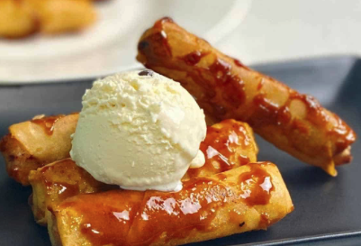

Filipino Turon Recipe

A Filipino Dessert
Filipino Turon topped with ice cream is what dessert dreams are made of—crispy, caramelized, and gloriously indulgent. Turon starts with ripe saba bananas (sometimes with sweet jackfruit) wrapped snugly in a thin spring roll wrapper, then fried until the outside turns golden and crackly with a glossy caramelized sugar coating. When served fresh and hot, the wrapper shatters with the perfect crunch, revealing the warm, gooey fruit inside. Now add a generous scoop of creamy ice cream melting over the top, and suddenly you’ve got a hot-and-cold dessert combo that’s downright irresistible.
Fun fact: Turon is one of the Philippines’ most beloved street foods, often sold by roadside vendors and local markets, but this ice-cream-topped version is a modern glow-up that’s become popular in cafés and home kitchens. Traditionally made with saba bananas (a cooking banana sweeter and firmer than regular ones), Turon was originally a simple merienda snack—but today it proudly doubles as a show-stopping dessert. One bite of that crunchy wrapper with melting ice cream, and you’ll understand why this humble street treat leveled up to superstar status.
Ingredients
- 6 Ripe Saba Bananas, halved lengthwise; Ripe Plantains if not available
- 1/2 cup Ripe Jackfruit, sliced
- 12 Spring Roll Wrappers
- 3/4 cup Brown Sugar (for coating and caramelizing)
- Water (for sealing wrappers)
- Neutral Cooking Oil (enough for frying)
- Vanilla Ice Cream (Classic Choice), or your favorite Ice Cream hiding in your freezer
- Extra Caramel Sauce or Syrup (optional drizzle)
- toasted Sesame Seeds (optional garnish)
Steps
- Peel the saba bananas and slice them lengthwise. If using plantains, make sure they’re very ripe (lots of black spots = sweeter turon). Slice the jackfruit into thin strips if you’re adding it.
- Roll each banana piece in brown sugar until lightly coated. This is the secret to that glossy caramel magic later—don’t skip it!
- Place one lumpia wrapper on a clean surface in a diamond position. Lay the sugared banana near the bottom corner and add a few strips of jackfruit if using. Fold the bottom corner over the filling, tuck in the sides, and roll upward tightly. Dab water on the top corner to seal. Repeat until all your turon are ready for their glow-up.
- In a pan, heat about 1–2 inches of oil over medium heat (around 350°F / 175°C). Test with a small wrapper piece—it should sizzle happily.
- Carefully place the turon in the oil seam-side down. Fry while turning occasionally until golden brown and beautifully caramelized, about 3–5 minutes. Sprinkle a little extra brown sugar into the oil during frying if you want extra sticky caramel vibes.
- Remove the turon and place on a rack or paper towels. Let them rest for a minute or two—hot sugar is basically edible lava.
- Plate the warm turon and top with a generous scoop of vanilla ice cream (or your favorite flavor). Watch it melt dramatically—this is the moment.
- Drizzle with caramel sauce, condensed milk, or sprinkle sesame seeds if desired. Serve immediately and enjoy the hot-and-cold magic.
Fun tip: Turon is best eaten fresh and crispy—blink too long and someone else might grab the last piece!
Home